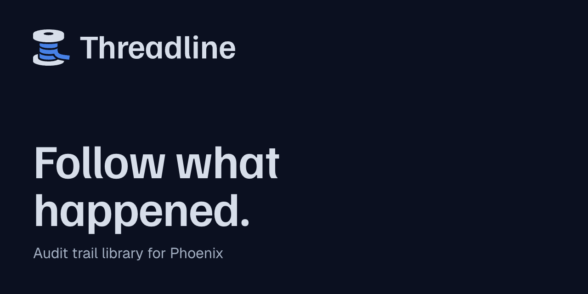

Threadline assets
Which file to use, version 1.0 (November 3, 2026). Logo files are flat vector art in the exact brand colors with a transparent background: light files are drawn for a light page, dark files for a dark one, and mono files are one-color drawings (ink or Fog). There is no shape behind any logo. The favicon follows the device theme by itself.
Logo on a light background


Logo on a dark background


One color: print and single-color jobs


Favicon and small sizes


Link preview and social card
